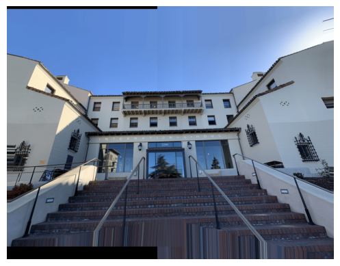

Project 4
Using homographies to rectify images and creating panorama images
Part A: Computing Homographies
To align the images for both the mosaic and rectification, I needed to compute the homography matrix between the images. The homography defines the transformation between two perspectives of the same scene, which can be used to map points from one image to the other.
The homography matrix is a 3x3 matrix that represents a projective transformation. We want to recover this projective transformation such that

If we expand this out, we have the following system of equations:
Expanding this further:
Which simplifies to:

This gives us the following system of linear equations:

Rectification
To ensure the homography matrix was calculated corectly, I took a picture of a square painting from an angle. I then manually selected four corner points from the painting in the image with the tool from the previous student. Then, I mapped those points to a perfect square which in this case was [0, 0], [0, 100], [100, 0], [100, 100] to compute the homography. I then inverse warped the image using the inverse of the homography matrix and bilinear interpolation where the pixels mapped between multiple pixels. Here are the points I selected on the painting and the result after warping the image in to the square:

Painting with defined points

Painting Rectified
I then did the same thing with a picture of a mirror

Mirror with defined points
Mirror Rectified
Warping for the Mosaic
For the mosaicing, I took three photos of I-House overlapping each other by about 60%. Here I made sure to keep the camera fixed in one location and rotating it around its own axis to make the center of projection the same for all images.
I House left image

I House middle image
I House right image
Afterward, I manually selected a bunch of points for correspondences between the left and middle image and the right and middle image.
Left image points

Middle image correspondence points

Middle image correspondence points

Right image points
Using the same warping funciton as before, I warped the images into three separate canvases, all with the same dimentions.

Left image canvas

Middle image canvas
Right image canvas
Blending the Images into a Mosaic
To then combine the images onto one canvas and smooth the transitions over them together, I first created an alpha mask for the middle image by setting 1 at the center and gradually decreasing to 0 at the edges by using euclidean distance from the center. I then multiplied this mask with the pixel values of the middle image to ensure a smooth transition between the warped images on the side and the middle image.

Alpha Mask

Middle Canvas with Alpha Mask
I then computed the weighted average of the three images by combining the pixel values from all images, using the total weight map to normalize the pixel intensities. By using this weight map, I got all the pixel values to a weighted average of all the overlapping images. This produced a smooth transition between the overlapping images. After cropping the image to remove the black edges, I got this final blended panorama.
I then did the exact same procedure for these three images of haas and the street next to it.

Haas left image
Haas middle image
Haas right image
Street left image
Street middle image
Street right image
Part B: Feature Matching and Autostitching
Harris points
To start implementing the autostitching, I used the sample code given in the project to detect the harris interest points. This made me get this result.
Adaptive Non-Maximal Suppression
As we can see, getting all the harris interest points results in a lot of points. To reduce the number of points, I used the Adaptive Non-Maximal Suppression algorithm to get the interest points that were both spread out and had a high corner response. I did this by first sorting the harris points by their strength. For each point, I then found all points that were stronger than the current point, even after mulitplying by a c_robust factor of 0.9. I stored the distance r_i to the closest point in a list. This process can be described with the following equation:
With this list of distances, I sorted it and select the stronger points that were the furthest away from each other. For the amount of points, I selected 500 as in the paper which resulted in the following image.
Feature Descriptor extraction
The next step now was to get feature descriptors for the points in each image. To do this, I looped over every 5th pixel around the image in a 36x36 grid to get a 8x8 descriptor for each point. I then normalized it by subtracting the mean and dividing by the standard deviation of the descriptor. This gave me descriptors that looked like this:
Descriptor before normalization
Descriptor after normalization
Feature Matching
After getting the descriptors, I then matched the descriptors between the two images by first normalizing the descriptors and then computing the euclidean distance between them. I could then sort the distances so that I had a list of the the descriptors that were the most similar. I then took the two first entries in this list which were the first and second nearest neighbor and kept all the matches that satisfied the Lowe's ratio test. This test was done by taking the ratio of the distance between the first and second nearest neighbor to make sure it was both a good and unique match. This gave me the following matches:
Matches between left and middle image
Matches between right and middle image
RANSAC
I now had the matches between the images, but as we see on the images above, some of the matches are still off. To fix this, I implemented the RANSAC algorithm to find the inliers in the matches. I did this by first randomly selecting 4 matches and computing the homography matrix between them. I then used this matrix to warp the points from the first image to the second image and checked if the distance between the warped points and the actual points were less than a threshold of 1 pixel away from each other. I then counted the amount of inliers and kept the homography matrix that had the most inliers. I then ended up with these inliers:
Inliers between left and middle image
Inliers between right and middle image
With the inliers, I could now warp the images into the final mosaic.
Autostitched
Manually stitched
Haas Autostitched
Haas Manually stitched
Street Autostitched
Street Manually stitched